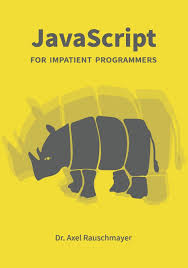

Book Name: Master Javascript edition 2000
Author: Mikhel William
Publication: Person Education
200 RS/-

The Mozilla project provides two JavaScript implementations. The first ever JavaScript was created by Brendan Eich at Netscape, and has since been updated to conform to ECMA-262 Edition 5 and later versions. This engine, code named SpiderMonkey, is implemented in C/C++. The Rhino engine, created primarily by Norris Boyd (also at Netscape) is a JavaScript implementation written in Java. Like SpiderMonkey, Rhino is ECMA-262 Edition 5 compliant. Several major runtime optimizations such as TraceMonkey (Firefox 3.5), JägerMonkey (Firefox 4) and IonMonkey were added to the SpiderMonkey JavaScript engine over time. Work is always ongoing to improve JavaScript execution performance.
| IMAGE | Description | Prise | Add to cart image |
|---|---|---|---|
|  | Book Name: Master Javascript edition 2000 |
200 RS/- |
|